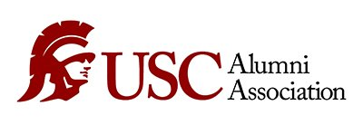

Postbaccalaureate Intramural Research Training Award
Postbaccalaureate Intramural Research Training Award
A fully funded research award given to undergraduate students to support 1-2 years of research whilst
the student applies to graduate programs. I will be conducting research on optical spectroscopy in medical devices at the
Tromberg Lab.
 Provost Research Fellowship
Provost Research Fellowship
A fellowship awarded by the USC Provost Office to undergraduate researchers.

Alumni Scholarship
An undergraduate scholarship awarded by the USC Alumni Association.
2019 Outstanding Student in General Chemistry
An award given by the USC Chemistry department to a single general chemistry student with exceptional performance.